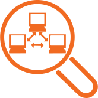

Systems and Security
Protect thousands of systems with one tool without disrupting business even in wildly heterogeneous environments

Discovery & Inventory
Discover hardware and software assets that are connected to your network automatically
Patch and vulnerability Management
Automate vulnerability assessment and patch management across your organization
Application Control
Mitigate threats without manually managing extensive lists, and without creating obstacles to user productivity
Privilege Account Management
Raise, lower, or eliminate privileges on a per-user role, application, or task basis
File and Removal Media Protection
Protect docs, drives, and files from encryption and deletion
Remediation of Running Ransomware
Define a rule that protects documents and other file types from ransomware encryption and deletion

Privileged Identity Management
Centrally manage and audit the use of privileged access credentials across systems, applications and platforms
Security Information and Event Management
Improve your effectiveness through continuous visibility into threats and risk